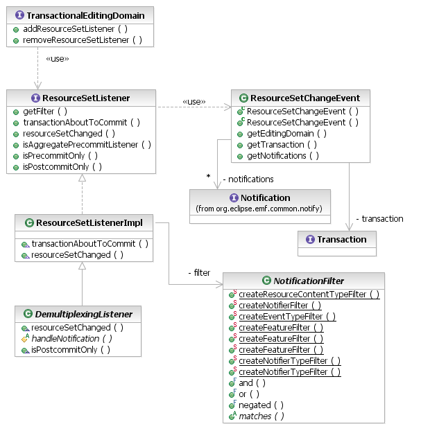

EMF provides an Adapter mechanism to notify listeners when objects change. In a transactional environment, though, we can end up reacting to changes only to find that they are reverted when a transaction rolls back. The EMF Transaction API provides a different kind of listener interface, one that receives the same Notifications, but not until the very end of a transaction: the ResourceSetListener.
The ResourceSetListener interface has two call-backs. A post-commit event notifies a listener of all of the changes, in a single batch, that were committed by a transaction. If a transaction rolls back, no event is sent because there were no changes. There are exceptions for changes that are not (and need not be) undone, such as resource loading and proxy resolution.
The other call-back is the pre-commit event, used in the implementation of triggers, which is another topic.

[as SVG]
As indicated above, post-commit listeners receive Notifications after a transaction has successfully committed the changes that they represent. The resourceSetChanged() call-back supplies a ResourceSetChangeEvent bearing the following information:
Listeners are attached to the editing domain. They can declare NotificationFilters that determine which notifications are of interest to them. The available filters test various attributes of a notification and can be combined using standard Boolean operators.
TransactionalEditingDomain domain;
class MyListener extends ResourceSetListenerImpl {
public void resourceSetChanged(ResourceSetChangeEvent event) {
System.out.println("Domain " + event.getEditingDomain().getID() +
" changed " + event.getNotifications().size() + " times");
}
}
ResourceSetListener listener = new MyListener();
domain.addResourceSetListener(listener);
The ResourceSetListenerImpl class is a convenient base class for listeners, providing no-op implementations of the call-backs for selective overriding.
Receiving all of the notifications that occurred during the transaction in one batch is convenient for listeners that need to analyze the entire set of changes. Conversely, sometimes it is more convenient to handle events one by one. A convenient listener abstraction for such situations is the DemultiplexingListener, class. Simply implement the handleNotification() method to deal with each notification individually.
class MyDemuxedListener extends DemultiplexingListener {
protected void handleNotification(TransactionalEditingDomain domain,
Notification notification) {
System.out.println("Domain " + domain.getID() +
" changed: " + notification.getNotifier());
}
}
Advantages of the ResourceSetChangedEvent include:
Listeners need to be aware that notifications are delayed relative to the timing of the changes. Notifications are only received after all changes are complete. Any given notification may not correspond to the current state of the resource set, depending on subsequent changes.
Attaching listeners to the editing domain at run-time works well for many applications. However, sometimes a plug-in doesn't get a chance to attach a listener or isn't even activated before interesting changes occur to which it needs to respond. For these situations, the EMF Transaction API provides the org.eclipse.emf.transaction.listeners extension point. This allows applications to statically register listeners against one or more editing domains. The associated editing domains may be registered either statically or at run-time. In either case, as soon as the editing domain is instantiated in or added to the registry, its registered listeners are created and attached.
<extension point="org.eclipse.emf.transaction.listeners">
<listener class="org.eclipse.example.MyListener">
<editingDomain id="org.eclipse.example.MyEditingDomain"/>
</listener>
</extension>
A listener can be associated with zero or more editing domains, by ID. In the case of zero editing domains, the listener is implicitly attached to all editing domains that are registered, either statically or at run-time. Listeners cannot be registered on editing domains that are not present in the Registry, even if they do have IDs.
Copyright (c) 2006, 2007 IBM Corporation and others. All Rights Reserved.